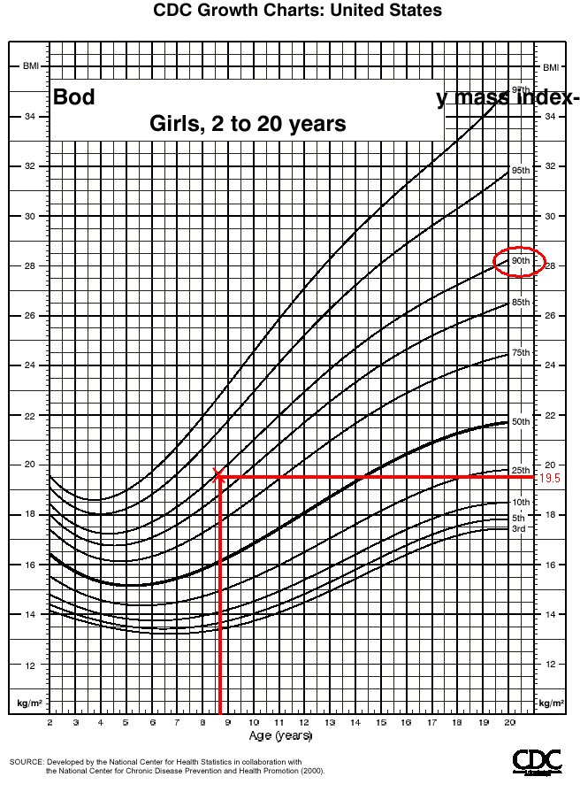

I looked over at the National Center for Health Statistics and here's what I've found.
First I measured Danni. She's 53 inches (4' 5") and weights 78 lbs. According to Instructions for calculating Body Mass Index this gives Danni a BMI of 19.52. Looking at the growth chart for girls ages 2-20 yields:

Looking at the Weight for Age chart yields similar concern:
Finally the Stature for Age: